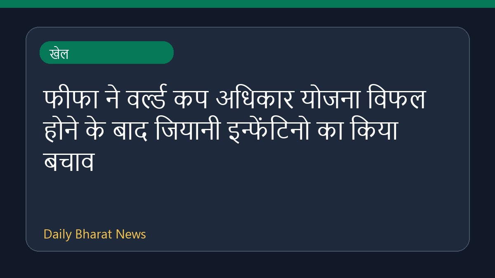
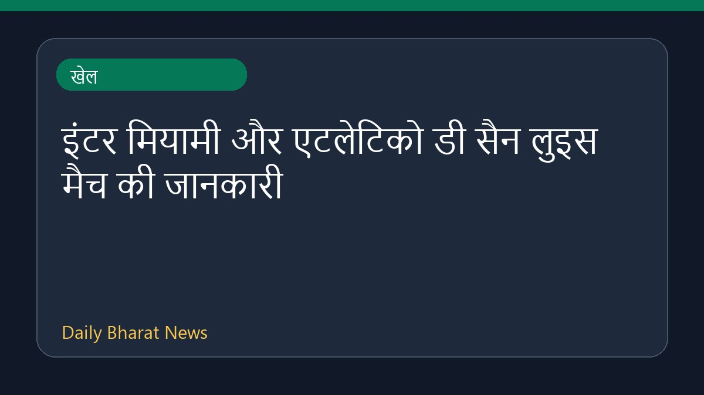
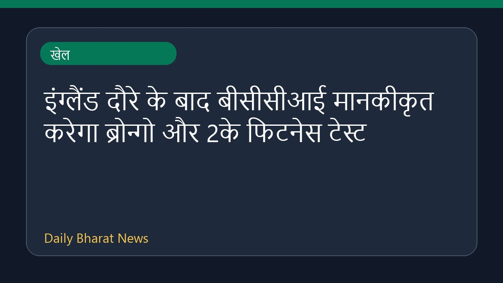
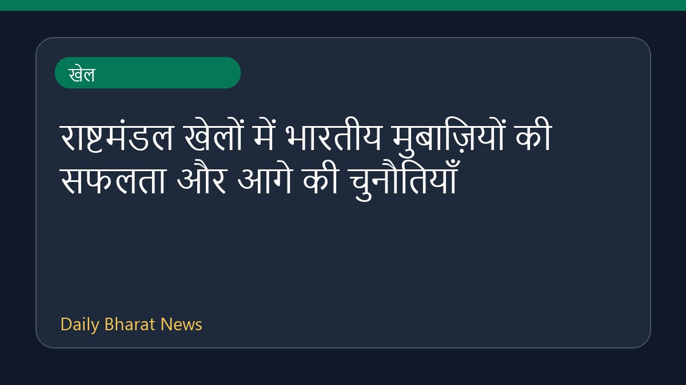
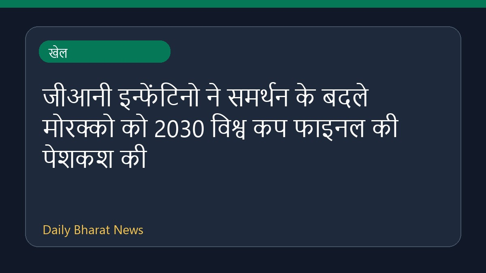

खेलफीफा ने हाल ही में वर्ल्ड कप अधिकार योजना के विफल होने और कार्यकारी बैठक के बाद अपने अध्यक्ष जियानी इन्फेंटिनो का बचाव करने का संकल्प लिया है। जियानी इन्फेंटिनो ने इसके लिए माफी मांगी है लेकिन वह फीफा अध्यक्ष पद पर बने रहेंगे। मीडिया रिपोर्ट्स के अनुसार, इस योजना के स्थगित होने और फीफा के कामकाज को
Sports News Sources · 06 Aug 2026, 04:38 AM
पूरी खबर पढ़ें →
खेलइंटर मियामी सीएफ और एटलेटिको डी सैन लुइस के बीच होने वाले लीग कप मुकाबले को लेकर प्रसारण और लाइव स्ट्रीमिंग की जानकारियाँ सामने आई हैं। लियोनेल मेस्सी के शानदार प्रदर्शन और गोलों की बदौलत टीम ने लीग कप की शुरुआत धमाकेदार अंदाज में की है। मैच के प्रीव्यू के अनुसार मियामी इस मुकाबले की मेजबानी कर रहा
Sports News Sources · 06 Aug 2026, 07:51 AM
पूरी खबर पढ़ें →
खेलइंग्लैंड दौरे पर खराब प्रदर्शन और फिटनेस के स्तर में गिरावट के बाद, भारतीय क्रिकेट कंट्रोल बोर्ड यानी बीसीसीआई ने खिलाड़ियों के लिए ब्रोन्गो और 2के फिटनेस टेस्ट को मानकीकृत करने का निर्णय लिया है। हालिया रिपोर्टों में टीम इंडिया के फिजियो से फिटनेस मानकों में गिरावट को लेकर सवाल भी किए गए हैं। इसके
Sports News Sources · 06 Aug 2026, 06:32 AM
पूरी खबर पढ़ें →
खेलहालिया राष्ट्रमंडल खेलों में भारत ने मुबाज़ी में सात स्वर्ण पदक जीते हैं। इसके साथ ही खिलाड़ियों के सामने आगे की बड़ी चुनौतियाँ भी हैं। साक्षी का एक जोखिम भरा दांव सफल रहा, जबकि प्रीति पवार ने राष्ट्रमंडल खेल में स्वर्ण जीतने से पहले मुबाज़ी छोड़ने का मन बना लिया था। अब प्रीति का लक्ष्य एशियाई खेलों
Sports News Sources · 06 Aug 2026, 09:08 AM
पूरी खबर पढ़ें → खेल
खेलक्रिकइन्फो की रिपोर्ट के अनुसार, बटलर ने टी20 क्रिकेट में सर्वाधिक रन बनाने का नया रिकॉर्ड अपने नाम कर लिया है। इसके साथ ही, सुपर जायंट्स की टीम ने अपने हालिया प्रदर्शन में सुधार करते हुए अपनी हार के सिलसिले को समाप्त कर दिया और जीत दर्ज की है। इस मुकाबले से जुड़े अन्य घटनाक्रमों और खेल जगत की अधिक
Sports News Sources · 06 Aug 2026, 07:00 AM
पूरी खबर पढ़ें →
खेलएक मीडिया रिपोर्ट के अनुसार, फीफा अध्यक्ष जियानी इन्फेंटिनो ने समर्थन हासिल करने के प्रयास में मोरक्को को 2030 फीफा विश्व कप के फाइनल मुकाबले की मेजबानी देने की पेशकश की है। द टाइम्स और अन्य खेल समाचार माध्यमों की रिपोर्ट के अनुसार, यह कदम इन्फेंटिनो द्वारा फीफा अध्यक्ष पद पर बने रहने के लिए समर्थन
Sports News Sources · 06 Aug 2026, 12:24 AM
पूरी खबर पढ़ें → देश
देश